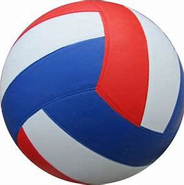

FOOTBALL
.jpg)
CRICKET KIT

VOLLYBALL
FOOTBALL
CRICKET KIT
VOLLYBALL
best online shopping ,where you get various sports item,one of the most popular and best shop.avalable in various hotspot places .Since 2013, Khelmart has stood as a dependable online sports enterprise in India, dedicated to providing precise and comprehensive insights into sporting merchandise. We take great pride in our commitment to supplying top-notch, competitively priced sports products.
| Andhra Pradesh | Amaravati || Arunachal Pradesh | Itanagar || Assam | Dispur || Bihar | Patna || Chhattisgarh | Raipur || Goa | Panaji || Gujarat | Gandhinagar || Haryana | Chandigarh || Himachal Pradesh | Shimla || Jharkhand | Ranchi || Karnataka | Bangalore || Kerala | Thiruvananthapuram || Madhya Pradesh | Bhopal || Maharashtra | Mumbai || Manipur | Imphal || Meghalaya | Shillong || Mizoram | Aizawl || Nagaland | Kohima || Odisha | Bhubaneswar || Punjab | Chandigarh || Rajasthan | Jaipur || Sikkim | Gangtok || Tamil Nadu | Chennai || Telangana | Hyderabad || Tripura | Agartala || Uttar Pradesh | Lucknow || Uttarakhand | Dehradun || West Bengal | Kolkata |